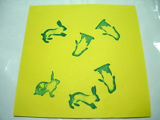
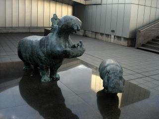
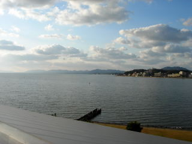
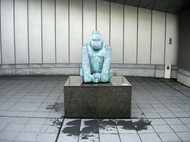

島根県立美術館
島根県松江市袖師町1-5
島根県立美術館の「江戸と明治の華展」
2008/07/05
江戸や明治のころの絵や工芸が多く展示してありました。エルヴィン・フォン・ベルツさんていう皇室侍医のコレクションらしいです。
絵や着物、工芸等、その時代のいいものを収集したみたいですね。収集用なので、コンディションも良く、綺麗でした。
特に工芸品は今でも輝いてて、ツヤがあり綺麗なものが多くありました。
最近アクセサリーって、ブランドや宝石とか貴金属ものしかイメージしないですが、昔からある日本の工芸物も十分綺麗だなって思いました。
何かちょっとした和の小物が欲しいなって思いました。
島根県立美術館のエリックカール展
2008/9/21
幼児向け絵本の「はらぺこあおむし」で有名なエリック・カール展です。
今日は「ミュージアムフェスティバル2008無料ご招待デー」だったので、大勢の人で賑やかでした。
でも今日は雨が降っていたので、思ってたほど混雑はしてなく、車を美術館の駐車場に止める事が出来てよかったです。
絵本でなじみのある絵が沢山展示してありました。
絵本を見ているときは、インパクトがあってちょっと個性的な絵で、不思議な絵だなって思ってたんですが、原画やVTRを見てたらなんとなく製作方法とか分かって面白かったです。
島根県立美術館の魅惑の近現代版画
2009/02/08
県立美術館の所蔵品が中心の版画展なので、常設展で見た事のある絵が色々ありました。なので観覧量が500円と、いつもよりお安い設定になってます。 浮世絵はほとんど見たことある作品だったんですが、わりと好きなので「何度見てもいいなー」って思いながら見てました。 版画っていうと浮世絵とか白黒の木版を想像していたんですが、色んな種類の作品があるんですね。 「この絵って版画なんだ。普通に書いた絵かと思ってた。」みたいな絵が多くありました。 リトグラフって版画になるんですね。何か別のものかと思ってました。
島根県立美術館の「橋本関雪展」
2009/08/09
夏の美術館はいいですね。空調がしっかりしてて快適な空間で、のんびり絵画を見るって贅沢ですね。しかも県立美術館は、特別展もいいですが、常設展の展示が多く、長い時間楽しめるがいいです。
橋本関雪展ですが、前半の中国画があまり興味がなかったんですが、後半の動物画はとても綺麗に感じました。ふんわりとした動物の体毛や、絵の焦点がいいなーって思いました。 ジメジメした休日にお勧めです。

県美で人気のうさぎのスタンプがあったので、押して帰りました。
島根県立美術館の浮世絵遊覧（北斎特集）
2010/01/17
今日は美術館の駐車場に車が沢山停まっててビックリしました。
全島根小・中学校図画作品展と、島根県保育所（園）造形作品展があったので、そのお客さんが多かったみたいです。
企画展の浮世絵遊覧「前期・北斎特集」のお客さんも多く、のんびり美術鑑賞って気分にはなれなかったです。
普段のコレクション展でも見れる内容なので、発色の綺麗な絵だけ見ました。
2階は1階と違って、ちょっと空いてました。こっちはのんびり出来てよかったです。

屋上は誰もいなかったので、独り占め出来ました。

今日は天気が良かったので、見晴らしが良かったです
島根県立美術館の浮世絵遊覧「後期 広重特集」
2010/02/14
大量に作品があるので、見るのが大変です。
お客さんも多く一つ一つじっくり見れないので、線が綺麗で発色のいい作品を選んで鑑賞しました。
どちらかというと、黒が多い絵が好きかなと思って見ました。
広重の絵で、出雲や石見の絵があったんですね。いい雰囲気の絵でした。

バレンタインデーなのでデート中の人達が多かったです。うさぎは大人気で、入れ替わりで写真を撮られてました。でも屋上のゴリラ君は今日も暇そうでした。